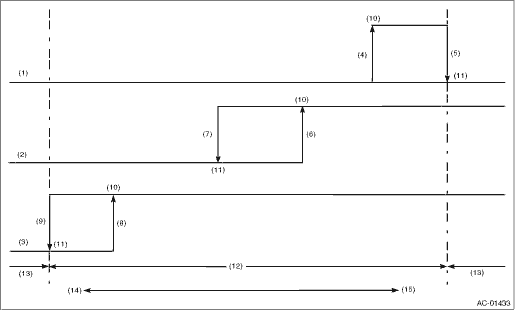

HVAC SYSTEM (HEATER, VENTILATOR AND A/C) > Pressure Switch (Triple Pressure Switch)
1. Connect the manifold gauge to the service valve on the high-pressure side.
2. Start the air conditioner, and check the operating pressure of switch by turning the compressor (magnet clutch) to ON/OFF. Operation of each switch is as follows.

|
(1) |
High pressure switch |
(6) |
1,770±100 kPa (18±1 kg/cm2, 256±14 psi) |
(11) |
OFF |
|
(2) |
Middle pressure switch |
(7) |
1,370±120 kPa (14±1 kg/cm2, 199±14 psi) |
(12) |
Operative range of compressor |
|
(3) |
Low pressure switch |
(8) |
206±30 kPa (2.1±0.3 kg/cm2, 30±4 psi) |
(13) |
Inoperative range of compressor |
|
(4) |
2,350±200 kPa (24±2 kg/cm2, 341±28 psi) |
(9) |
177±25 kPa (1.8±0.3 kg/cm2, 26±4 psi) |
(14) |
Low pressure |
|
(5) |
2,940±200 kPa (30.0±2 kg/cm2, 427±28 psi) |
(10) |
ON |
(15) |
High pressure |
NOTE:
• High pressure switch turns the compressor (magnet clutch) to OFF when the refrigerant pressure becomes extremely high to prevent the evaporator, air conditioner piping and expansion valve from getting damaged or frozen.
• Middle pressure switch effectively controls the radiator fan output by judging high load/low load in normal pressure range.
• Low pressure switch turns the compressor (magnet clutch) to OFF, judging as low refrigerant level when the refrigerant pressure becomes extremely low, to prevent the possible seizure if the compressor rotates.